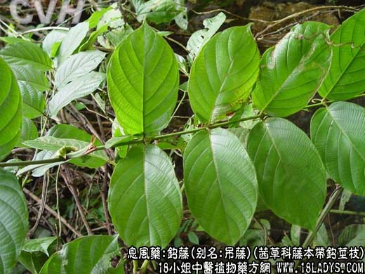

【中药概述】
钩藤，别名钓藤、吊藤、钩藤钩子、钓钩藤、莺爪风、嫩钩钩、金钩藤、挂钩藤、钩丁、倒挂金钩、钩耳、双钩藤、鹰爪风、倒挂剌，为茜草科藤本植物钩藤、毛钩藤、华钩藤的带钩茎枝。甘，微寒。归肝、心包经。
1．平肝息风：用于肝风内动而致头旋、目眩，耳鸣、失眠等，可配菊花，天麻，防风，半夏，茯苓，白蒺藜，泽泻，生石决明，生代赭石等。如（<本事方>钩藤饮）。
2．小儿发热抽搐：热极生风可致咬牙、四肢抽搐、烦躁不安等症，常配菊花，全蝎，蜈蚣，黄连，郁金，天竺黄，桑叶，连翘，胆南星等。
3．中风：肝风内动、风痰上忧而致忽然昏倒、口面歪斜、半身不遂、言语失利等症，常配半夏，陈皮，茯苓，菊花，桑枝，白蒺藜，红花，赤芍，地龙，炙山甲等。
【药效鉴别】
钩藤为治肝阳上亢、肝风内动之要药，且能清泄肝火，非仅能治肝火头痛头胀，尤宜于肝阳兼有肝火、肝风因于高热诸症。
【应用与配伍】
1．用于肝风内动，惊痛抽搐。钩藤甘而微寒，入肝，有和缓的息风止痉作用，为治疗肝风内动，惊痫抽搐之常用药，亦多用于小儿。如用治小儿惊风壮热神昏、牙关紧闭、手足抽搐等症，常与天麻、全蝎等同用，即钩藤饮；用治温热病热极生风，痉挛抽搐，多与羚羊角、白芍药、菊花等配伍，如羚角钩藤汤；用治诸痫啼叫，痉挛抽搐，可与天竺黄、蝉蜕、黄连等同用，如钩藤饮子。
2．用于头痛，眩晕。本品既清肝热，又平肝阳，故可用治肝火上攻或肝阳上亢之头痛、眩晕。属肝火者，常与夏枯草、栀子、黄芩等配伍；属肝阳者，常与天麻、石决明、菊花等配伍。近年有用20％钩藤煎剂，治疗高血压病，其有温和的降压作用，除三期高血压病人外，多数患者血压均有不同程度的下降，随着血压的下降，病人头痛、头晕、失眠、心慌、气促等自觉症状亦相应减轻或消失。 此外，本品与蝉蜕，薄荷同用，可治疗小儿夜啼，有凉肝止惊之效。
【药理作用】
1．中枢抑制作用：煎剂0.1～0.5g／kg给小鼠腹腔注射，能出现闭目、卧伏、自发活动减少等镇静现象，并能对抗咖啡因对小鼠的兴奋作用。
2．对心血管的作用：钩藤煎剂和钩藤总碱、钩藤碱，对麻醉或不麻醉动物，正常动物或高血压动物，无论是静注或灌胃给药均有降压作用。且无快速耐受现象。钩藤煎剂久煎则降压作用减弱，以煎20分钟为宜。
3．平喘：钩藤总碱能对抗组胺喷雾引起的豚鼠气喘。
4．毒性：钩藤碱、钩藤总碱小鼠腹腔注射的LD50分别为162.3mg／kg与144.2mg／kg。
【化学成分】
含吲哚类生物碱，有钩藤碱、异钩藤碱、赛鸡纳碱、异赛鸡纳碱、毛帽柱木碱、去氢毛帽柱木碱、兜花木碱、二氢兜花木碱。
【用量用法】
10——15g，水煎服，宜后下（煮沸超过20分钟，降压的有效成分便部分破坏）。
【使用注意】
用卑胃虚寒者慎服。
1.《本草征要》：“若大人有寒者，不宜多服。”
2.《本草新编》：“最能盗气，虚者勿投。”
3.《本草从新》：“无火者勿服。”